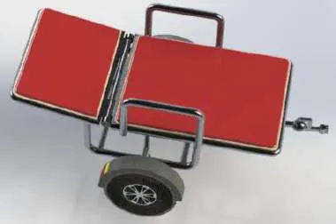
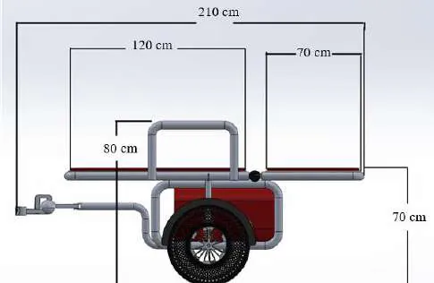
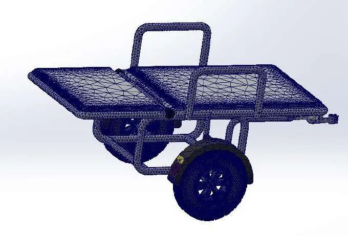
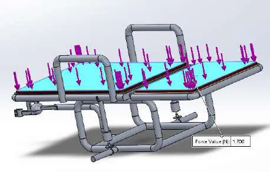
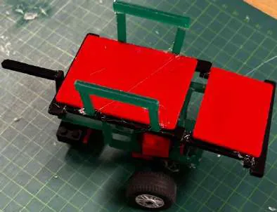
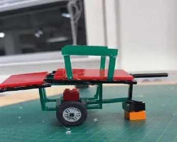

← Alle projekterArk 06 af 08
Kursus 62696 Produktudvikling · DTU · hold på 4
FirstRider-cykelanhænger til redningsarbejde
En cykelanhænger, der foldes ud til en båre, så reddere på elcykler kan nå frem til og transportere patienter, hvor murbrokker efter jordskælv blokerer ambulancer.
- Sammenhæng
- Kursus 62696, DTU
- Hold
- 4 personer
- Min rolle
- Fælles arbejde gennem hele projektet; CAD og samlingstegninger
- Værktøjer
- SolidWorks, Simulink, Granta EduPack
- 6082-T6
- aluminiumsramme
- <170 kg
- anbefalet samlet belastning
- 1:10
- skalamodel
Hvad vi byggede
Efter et jordskælv kan spærrede veje og murbrokker standse ambulancer. Opgaven var en anhænger til en elcykel, som reddere kan bruge til førstehjælp og til at transportere patienter korte strækninger over ujævnt terræn.
- Undersøgelser, konkurrentanalyse og en SWOT-analyse før valget mellem koncepter.
- En ramme, der fungerer som anhænger og åbnes til en båre, ca. 210 cm lang i udfoldet tilstand.
- Aluminium 6082-T6 til rammen, valgt i Granta EduPack ud fra styrke og pris.
- Statiske styrkeberegninger af rammen i SolidWorks og en affjedringsmodel i Simulink. Vi anbefaler at holde den samlede belastning under 170 kg.
- Masse i SolidWorks ca. 52,7 kg. Anslåede materialeomkostninger 1.674–2.351 DKK.
- En fysisk prototype i skala 1:10.

Min del
Hold på fire
Rapporten beskriver, at vi fire fordelte arbejdet ligeligt, fra undersøgelser og konceptvalg til CAD, styrkeberegninger, omkostningsberegning og prototype. Jeg arbejdede med CAD-modellen og samlingstegningerne til fremstilling.











